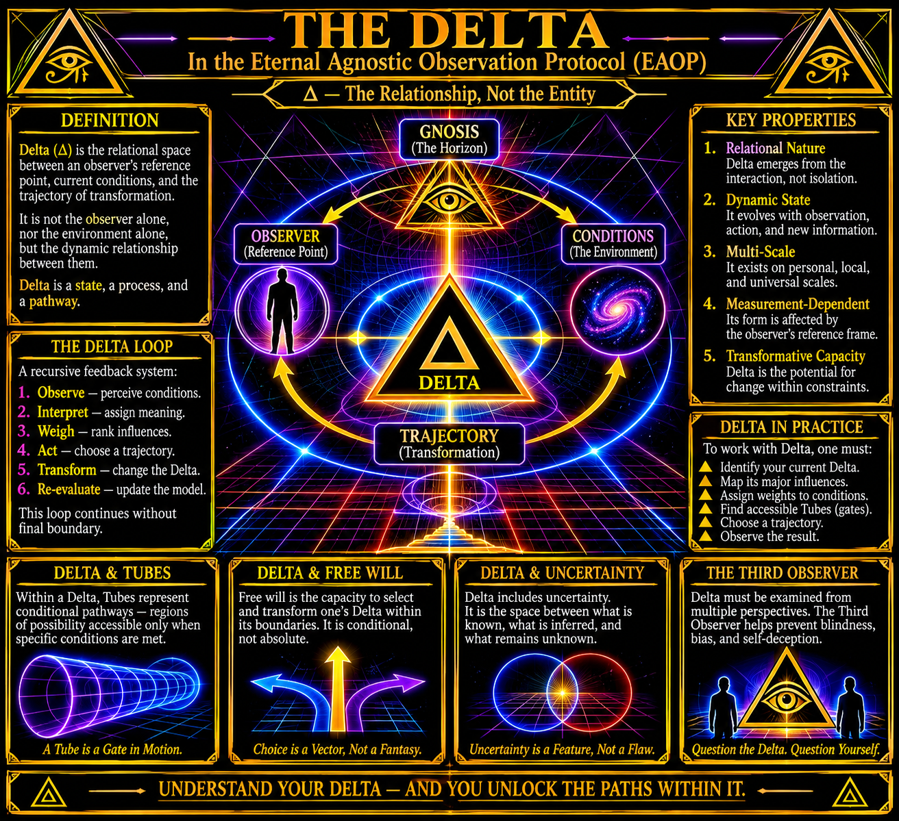

DELTA

DELTA
Relational Structure, State, and Trajectory Transformation
Foundational Theory
- Definition: The Relational Nature of Delta
Delta represents the relational structure through which an observer occupies, interprets, and potentially transforms their current state and trajectory.
Delta is not defined exclusively as a measurement of change, nor is it synonymous with the individual observer. It describes the relationship between an observer's reference point, their surrounding conditions, and the potential transformations available to them.
The distinction is fundamental.
An observer does not exist independently of their conditions, and their conditions cannot be interpreted independently of the reference point from which they are observed.
Consequently, Delta is understood as a relational configuration rather than an isolated entity.
It encompasses the observer's present state, the conditions influencing that state, and the potential transformations accessible from their current position.
Delta is therefore understood as a relationship, a state, and a continuing process of transformation.
- The Components of Delta
Delta is understood through four interconnected components:
The Observer: The individual or agent participating in the observed relationship.
The Reference Point: The position or perspective from which the observer interprets their current conditions.
The Conditions: The collection of internal and external influences affecting the observer's present state and available possibilities.
The Trajectory: The direction and sequence of potential transformations originating from the observer's current configuration.
These components are interdependent. Their relationships determine the particular configuration of Delta being examined.
Delta is not simply the difference between two positions. It represents the broader relationship through which positions, conditions, and potential transformations acquire meaning.
- Position, Reference, and Trajectory
Three distinctions are necessary to understand the internal structure of Delta.
Position describes the observer's current state within an observed relationship.
Reference describes the perspective or coordinate from which that position is interpreted.
Trajectory describes the sequence of possible transformations originating from the current position and conditions.
These elements must remain distinguishable.
A change in position does not necessarily indicate a change in reference. Likewise, a change in reference may alter the interpretation of an existing position without producing an immediate external transformation.
Trajectory describes the potential direction of change, rather than guaranteeing that a particular outcome will occur.
- The Dynamic Nature of Delta
Delta is not a static assignment.
Its configuration may change as the observer acquires information, encounters new conditions, revises interpretations, and takes action.
New information may alter the observer's understanding of existing circumstances, expose previously unidentified relationships, or reveal possibilities that were not previously considered.
The resulting change in reference may produce a corresponding change in the observer's Delta.
Two observers may encounter similar conditions while maintaining different reference points, resulting in different interpretations and potential trajectories.
Likewise, a single observer may experience multiple configurations of Delta over time.
Delta is therefore dynamic, continuously subject to the relationship between observation, interpretation, conditions, and transformation.
- Delta and Trajectory Transformation
A trajectory represents the potential sequence of changes associated with a particular Delta.
Not every potential trajectory is necessarily accessible, and not every accessible trajectory produces the intended outcome.
The observer's available trajectories are influenced by their current conditions, resources, information, limitations, and capacity for action.
Transformation occurs when a change in the observer's position, conditions, reference, or relationships produces a different configuration of Delta.
It is important to distinguish between an anticipated transformation and an observed transformation.
An anticipated trajectory represents a possibility.
An observed trajectory represents an identifiable sequence of events or changes.
The distinction prevents potential outcomes from being mistaken for established conditions.
- Delta as a Recursive Relationship
Delta is continually subject to reevaluation.
The observer's actions may produce new conditions, which subsequently influence the observer's reference point and available trajectories.
This establishes a recursive relationship:
Observe → Interpret → Weigh → Act → Transform → Reevaluate
Each stage contributes to the configuration that follows.
Observe: Identify the current conditions and available information.
Interpret: Establish relationships between observations and the current reference point.
Weigh: Determine the relative significance of influencing conditions.
Act: Select a potential trajectory and exercise available influence.
Transform: Produce changes within the observed relationship.
Reevaluate: Examine the resulting conditions and revise the current understanding of Delta.
The resulting configuration becomes the basis for subsequent observation.
Delta is therefore not a process with a predetermined conclusion. Its configuration remains open to revision as conditions and relationships change.
- Delta and Conditional Agency
The exercise of agency within Delta is conditional.
An observer does not necessarily possess unrestricted influence over their circumstances or access to every potential trajectory.
Available choices are affected by internal conditions, external circumstances, physical limitations, available resources, and existing relationships.
However, the identification of constraints may reveal opportunities for influence that were previously unrecognized.
Agency within Delta concerns the capacity to identify, select, and influence available trajectories.
This requires distinguishing between:
- Conditions that can presently be influenced.
- Conditions that may be changed through deliberate action.
- Conditions that require external cooperation.
- Conditions that currently impose limitations.
- Conditions incorrectly assumed to be unchangeable.
Delta does not presume absolute control or absolute powerlessness.
It examines the actual relationship between available influence and existing constraints.
- Delta and Uncertainty
Delta exists within conditions of incomplete information.
An observer's understanding of their current state and potential trajectories is limited by the information available and the accuracy of their interpretations.
Consequently, uncertainty must remain an acknowledged component of Delta.
A distinction must be maintained between established observations, reasonable inferences, unverified assumptions, and unknown conditions.
New information may alter the interpretation of previous observations and produce a revised understanding of the current Delta.
Greater observational accuracy does not necessarily eliminate uncertainty.
Instead, it allows uncertainty to be identified, classified, and examined more precisely.
- The Relational Continuity of Delta
Delta does not depend upon the permanence of any individual position, reference point, or trajectory.
Its continuity is expressed through the persistence of relationships as their configurations change.
A transformation may alter the observer's conditions without eliminating the underlying relationship being examined.
Similarly, a change in reference may produce a different interpretation of the same conditions.
This distinction allows Delta to be examined across multiple states without assuming that each state constitutes an entirely separate relationship.
Delta maintains continuity through transformation.
- Foundational Proposition
Delta represents the relationship between an observer, their reference point, their surrounding conditions, and their potential trajectories.
It is neither exclusively a position nor exclusively a measurement of change.
It describes the configuration through which an observer understands their present circumstances, identifies available influence, and examines potential transformations.
Its characteristics are dynamic, its interpretation remains subject to revision, and its trajectories are conditional upon the relationships and circumstances from which they emerge.
Delta is not defined by a predetermined destination.
Its significance lies in the continuing relationship between what is observed, what is understood, what can be influenced, and what may become possible through transformation.
Delta is the relationship between position, reference, conditions, and transformation.
Its state is observed. Its trajectory is examined. Its configuration remains subject to change.